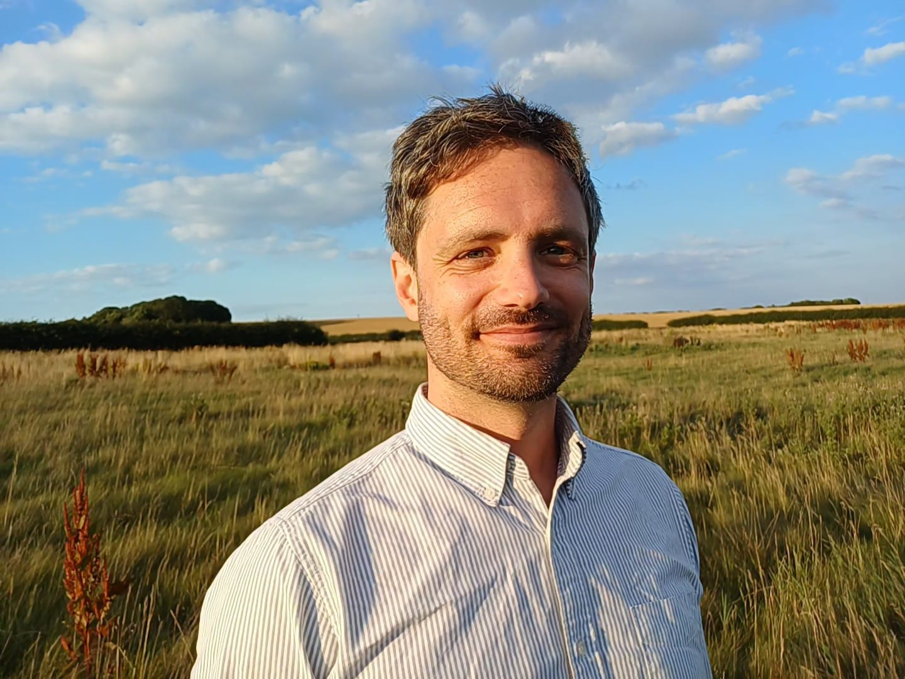

Lee Crawfurd
Senior Research Fellow, Center for Global Development
Previously economist and advisor to the governments of Rwanda, South Sudan, and the UK, and consultant to the World Bank, AfDB, and ADB. PhD in Economics from the University of Sussex; studied at Oxford and SOAS London.
Publications
2026
2025
Understanding Education Policy Preferences: Survey Experiments with Policymakers in 35 Developing Countries
World Development
2024
Sexist Textbooks: Automated Analysis of Gender Bias in 1,255 Books from 34 Countries
PLOS One
The Effect of Lead Exposure on Children's Learning in the Developing World: A Meta-Analysis
World Bank Research Observer
Feasibility First: Expanding Access Before Fixing Learning
International Journal of Educational Development
2023
Improving School Management in Low and Middle Income Countries: A Systematic Review
Economics of Education Review
Live Tutoring Calls Did Not Improve Learning during the COVID-19 Pandemic in Sierra Leone
Journal of Development Economics
The Impact of Private Schools, School Chains and PPPs in Developing Countries
World Bank Research Observer
2022
2021
Discrimination by Politicians Against Religious Minorities: Experimental Evidence from the UK
Party Politics
Accounting for Repetition and Dropout in Contemporaneous Cross-Section Learning Profiles: Evidence from Rwanda
International Journal of Educational Development
Contact and Commitment to Development: Evidence from Quasi-Random Missionary Assignments
Kyklos
2020
Working Papers
Beyond Hot Spots: Estimating Population Lead Exposure from Battery Recycling
2026
The Economic Returns to Foundational Literacy and Numeracy: Evidence from Indonesia
2025